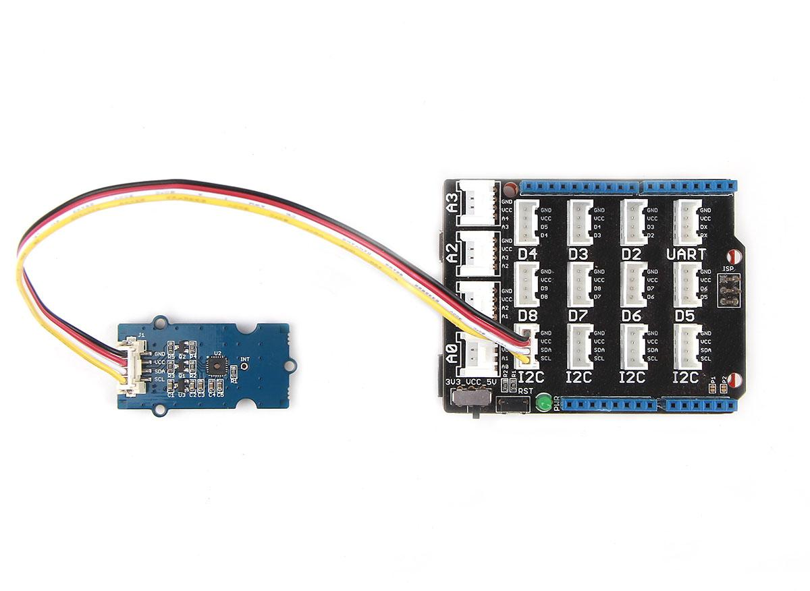
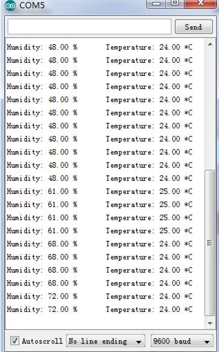

This is a multifunctional sensor that gives you temperature and relative humidity information at the same time. It utilizes a TH02 sensor that can meet measurement needs of general purposes. It provides reliable readings when environment humidity condition in between 0-80% RH, and temperature condition in between 0-70°C, covering needs in most home and daily applications that don't contain extreme conditions.

This demo is going to show you how to read temperature and humidity information from this Grove - Temperature&Humidity Sensor (High-Accuracy &Mini) Sensor.

The Temperature and Humidity sensor is connecting to analog port I2C of Grove - Base Shield.
/*
* Demo name : TH02_dev demo
* Usage : DIGITAL I2C HUMIDITY AND TEMPERATURE SENSOR
* Author : Oliver Wang from Seeed Studio
* Version : V0.1
*/
#include <TH02_dev.h>
#include "Arduino.h"
#include "Wire.h"
void setup()
{
Serial.begin(9600); // start serial for output
Serial.println("****TH02_dev demo by seeed studio****\n");
/* Power up,delay 150ms,until voltage is stable */
delay(150);
/* Reset HP20x_dev */
TH02.begin();
delay(100);
/* Determine TH02_dev is available or not */
Serial.println("TH02_dev is available.\n");
}
void loop()
{
float temper = TH02.ReadTemperature();
Serial.println("Temperature: ");
Serial.print(temper);
Serial.println("C\r\n");
float humidity = TH02.ReadHumidity();
Serial.println("Humidity: ");
Serial.print(humidity);
Serial.println("%\r\n");
delay(1000);
}
Note:
